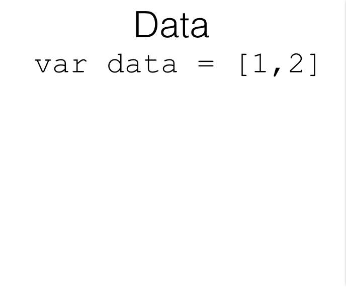

Lecture 3 (technical): Introduciton to D3
Outline
- Overview
- Making Selections
- Binding Data
- Individual Exercises
- Review
Overview
- D3 is the most popular library for building web visualizations
- It's not a charting library
- D3 binds data to DOM elements and facilitates dynamic manipulation
- Add the D3 library in the head of your HTML document
Making Selections
- Javascript can select and manipulate HTML elements
document.getElementById('my-id').style.fill = 'red'd3.select('#my-id').style('fill', 'red')d3.selectAll('.my-class').style('fill', 'red')Binding data
- The power of D3 is its ability to bind data to DOM elements
- Each element (ie,
<circle>,<rect>) is tied to data - Any HTML elements without corresponding data can be removed
- Any data without existing HTML elements can add new HTML elements
- Existing HTML elements can transition to reflect updates in the data
How it works: entering
How it works: exiting

How it works: updating


Enter Elements
- Select element to which you want to bind data (ie, svg)
- Select all child elements of SVG that you want to bind data to
- Enter new objects onto the page and append the desired elements
- Assign attributes
var mySvg = d3.select('#my-svg')var circles = mySvg.selectAll('circle').data(dataSet)circles.enter().append('circle')circles.attr('r', 15).attr('cx', 50)...Remember functions?
- Many similar processes are repeated when updating elements
- These processes can (should) be stored in functions
- Function to define circle attributes
var circleFunction = function(circle) {
circle.attr('r', 15)
.attr('cx', function(d) {return d*1})
.attr('cy', function(d) {return d*30})
.attr('fill', 'blue')
}
Exit Elements
- Select element to which you want to manage data (ie, svg)
- Select all child elements of SVG that you want to bind data to
- Remove circles that are no longer present
var mySvg = d3.select('#my-svg')var circles = mySvg.selectAll('circle').data(dataSet)circles.exit().remove()Transition Elements
- Select element to which you want to manage data (ie, svg)
- Select all child elements of SVG that you want to bind data to
- Select all elements and transition a property
var mySvg = d3.select('#my-svg')var circles = mySvg.selectAll('circle').data(dataSet)mySvg.selectAll('circle').transition().duration(500).attr('cx', 100)